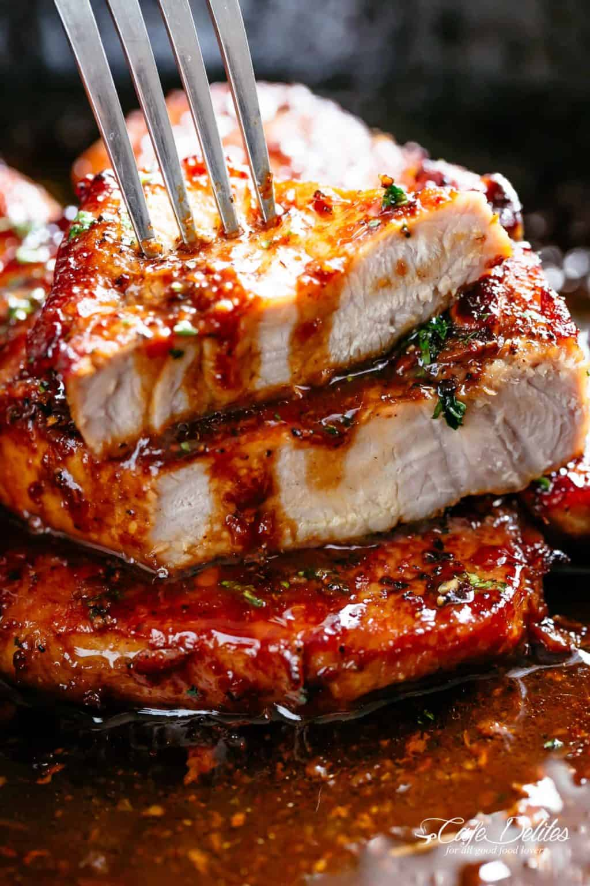

Honey Garlic Porl Chops
Really quick and easy recipe for some caremilised pork chops
Ingredient list
- 4 pork chops bone in or bone out
- salt and pepper
- 1 tsp garlic powder
- 2 tbsp olive oil
- 1 tbsp unsalted butter
- 6 cloves of minced garlic
- 1/4 cup honey
- 1/4 cup water/chicken broth
- 2 tbsp rice wine vinegar/any white vinegar
Cooking procedure
- Preheat oven or grill on medium-high heat. Season chops with salt, pepper and garlic powder before cooking.
- Heat oil in a pan or skillet over medium high heat until hot. Seat chops on both sides until golden and cooked through and set to the side.
- Reduce heat to medium. Melt butter in the same pan, scraping up any browned bits from the bottom of the pan. Sauté garlic intil fragrant. Ass th ehoney, water and vinegar. Increase heat to medium-high and continue to cook until the sauce reduces down and thickens slightly, while stirring occasionally.
- Add pork back into pan, baste generously with the sauce and briol/grill for 1-2 minutes, or until sides are slightly charred.
- Garnish with parsley and serve over your choice of side dish.
